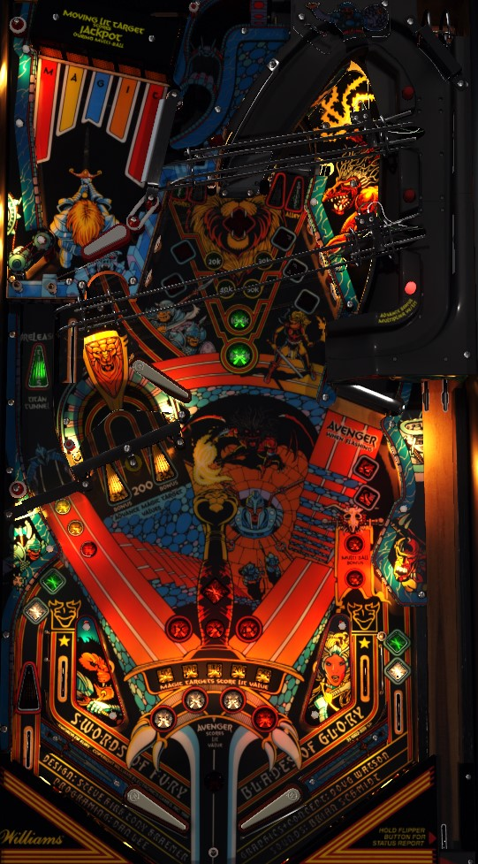

Know how to shoot the Lionman ramp in the back-center of the game on short notice. It's especially ideal if your machine has a lower right flipper strong enough to make the center ramp directly. Shooting this ramp during gameplay increases the Lionman value; making it within a few seconds of lighting all 7 Avenger standup targets around the playfield scores that Lionman value, which can be as much as 1,000,000 points. Lock balls at the leftmost lane any time during single ball play. Lock 3 balls to start multiball. During multiball, all scoring is tripled with 3 balls in play or doubled with 2 balls in play, except the Lionman and the Jackpot. To score the jackpot, make the right ramp during multiball to put a ball on the mini-playfield, then hit the flashing drop target.
All plunges end up on this mini-playfield. There is just one flipper, a very small right flipper. Use it to hit the Magic drop targets at the top of the mini playfield. Any drop target down scores 5,000 points. Hit a flashing drop target to light it. Knocked down drop targets will pop back up, but they will take longer and longer to do so the more trips to the mini-playfield you make. If you light all 5 drop targets, you score the Magic value and increase the bonus multiplier. The Magic value starts at 150,000 points. Every time the ball drains out of the mini playfield- either by falling out the bottom, or exiting through the top via a hole left by a drop target that has not popped back up- the Magic value decreases by 50,000, to a minimum of 50,000 points. Shoot the u-turn lane near the bottom of the main playfield to increase the Magic value; every 20 spins or so of the two spinners combined adds 50,000 to the Magic value, up to a maximum of 250,000 points.
The mini-playfield can be re-accessed during gameplay with any shot to the right ramp, or a shot to the center ramp when the furthest of the three red ramp diverter lights is lit. When a ball is locked, you get a new ball to plunge to this playfield as well.
Anytime in single ball play, shoot this lane to lock a ball. 3 locks starts multiball, and also relights the kickback in the left out lane if it had been used.
The spinner at the mouth of this lane starts each ball at a value of 1,000 points per spin. Each time it is shot, the value will upgrade after the spinner stops moving. Spinner values are 1,000 - 1,500 - 2,000 - 3,000 - 3,500 - 4,500.
This is a turnaround lane with spinning targets at both entrances. It can be shot in either direction. For these two spinners, they always score 100 points per spin. Unlit spinners add 200 points to the end of ball bonus per spin, while lit spinners add 600 to the bonus per spin. The right in lane lights one of the two spinners. If just one spinner is lit, hitting a slingshot will alternate which one is lit. Going through the right in lane a second time will cause both spinners to be lit at once. If a lit spinner registers, it will unlight when the spinner stops moving, meaning you get one good shot at a lit spinner before you need to find the right in lane again.
Ogre's Alley is the mini loop at the back of the main playfield, typicall only shot with the upper flipper. One entrance of the loop will always be lit white for Advance, and the other entrance will always be lit green for Collect. The loop value starts at 20,000 points. Shooting Advance will increase the loop value in the order of 30,000 - 40,000 - 50,000 - 100,000 - 500,000. Shooting Collect earns the lit value and resets the value to 20,000. The 500,000 can only be collected once per game; after that, 100,000 will be the maximum value.
The out lanes are lit similarly to the Ogre's Alley entrances: one is lit white, and one is lit green. Just like Ogre's Alley, the lit white out lane will advance the Ogre's Alley loop value, and the lit green out lane will collect the loop value as the ball drains (or as the left kickback is used, should those two things be aligned).
The Lionman bonus starts at 100,000 points. Shooting the center ramp when it is not lit to collect Lionman will increase Lionman. Lionman value progression goes as follows: 100,000 - 125,000 - 175,000 - 250,000 - 350,000 - 475,000 - 625,000 - 800,000 - 1,000,000. The center ramp can take the ball to one of three places based on which red light is lit on the ramp diverters: the furthest red light puts the ball in the mini-playfield, the middle red light puts the ball in the lock area where it will count as ball 1 locked if no balls are locked, or kick to the upper flipper otherwise; the nearest red light feeds the upper flipper directly and increases the bonus multiplier. The longer a ball goes on, the more likely the center ramp is to put the ball somewhere other than the mini-playfield, but I have not figured out what causes the diverter to change exactly.
The seven standup targets around the playfield correspond to the letters in the word Avenger. These targets award 10,000 points and add 300 to the end of ball bonus. Hit an unlit target to light it. Completing the word Avenger scores and advances the current Avenger value, which goes 50,000 - 150,000 - 250,000 - extra ball, before cycling back to 50,000. Going through either in lane spots one Avenger letter and lights the right ramp for a very short time to instantly complete the word Avenger. If you get the final Avenger letter from a left in lane then immediately make the right ramp, you can get two Avenger bonuses in quick succession.
Completing the word Avenger awards 1 bonus multiplier and lights the center ramp to collect the Lionman award. At the beginning of the game, the Lionman ramp will stay lit for a collect for about 15 seconds. If your score is more than 2,000,000 points, the ramp will only ever stay lit for 5 seconds. Shoot the center ramp when lit to collect the current Lionman value and reset it back to 100,000 points. This is frequently the most valuable shot in the game outside of the jackpot.
Multiball starts as soon as a third ball is locked at the left lane. Multiball is generally 3 balls. However, if when you lock the second ball, the ball does not make it all the way to the kickout hole under the mini-playfield and falls to the right instead, you can accidentally start 2-ball multiball. During multiball, there is a temporary playfield multiplier: 3x for 10 seconds or until the 3rd ball is drained, then 2x for 10 more seconds or until the 2nd ball is drained. Playfield multiplier affects nearly all scoring, including the Avenger bonus and the Ogre's Alley bonus; the only exclusions are the Lionman bonus and the jackpot.
To collect the jackpot, shoot the right ramp during multiball to get a ball on the mini-playfield, then hit the flashing drop target to score the jackpot. The jackpot starts at 500,000 points and increases by 5,000 every time a ball is played without collecting the jackpot. If a game ends and there are no credits on the machine while the jackpot is less than 1,000,000 points, the game will automatically add 1,000,000 to the jackpot. Maximum jackpot value is 4,000,000 points, and it resets to 500,000 when collected.
Swords of Fury has a conventional in/out lane setup. The in lanes spot a letter in Avenger and light the right ramp for an Avenger completion for a few seconds. The out lanes can be lit for either Advance Ogre Alley or Collect Ogre Alley, alternating with each slingshot hit.
There is a kickback in the left out lane called the Sheild, and yes that typo is actually featured on the original playfield art. The kickback unlights once used and can only be relit by starting multiball.
Base bonus is advanced by 200 points per lower wall rubber or slingshot hit, and 1,000 points per center ramp or AVENGER target hit. Max base bonus is 100,000 points. Bonus multiplier is advanced by completing the Magic drop targets on the mini playfield or taking the nearest exit from the center ramp. Max bonus multiplier is 7x. After reaching 7x bonus, completing the Magic drop targets again scores an instant special. There is no way to carry base bonus or bonus multiplier over from ball to ball, and there is no mid-ball bonus collect.
In competition/novelty play, specials score 100,000 points. Extra balls cannot be set to have a point value.
The default times for Magic drop targets to pop back up are 1, 3, 8, 16, and 32 seconds, depending on whether Magic has been completed 0, 1, 2, 3, or 4+ times. Any of these five timers can be set to any value from 1 to 99 seconds.
The Sheild kickback is typically on at the start of every ball, but it can be set to be off at the start of each ball if the current player's score is at least 2,000,000 points.
The Jackpot can increase by anywhere from 1,000 to 99,000 per ball played.
The Magic drop targets can be set to award a special at the same time as 7X bonus, or at one completion beyond 7X bonus, or at two completions beyond 7X bonus.
Lionman timer can be set to anywhere from 5 to 40 seconds.